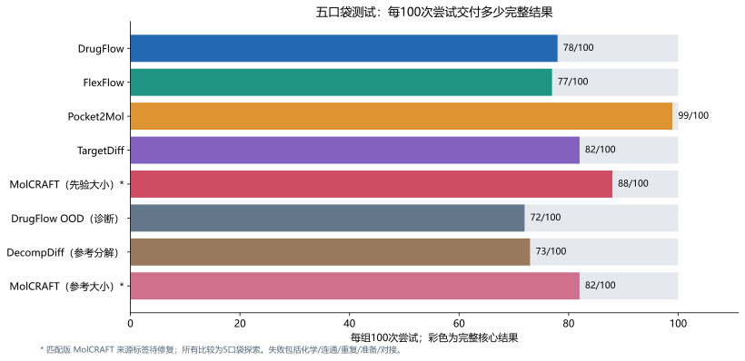
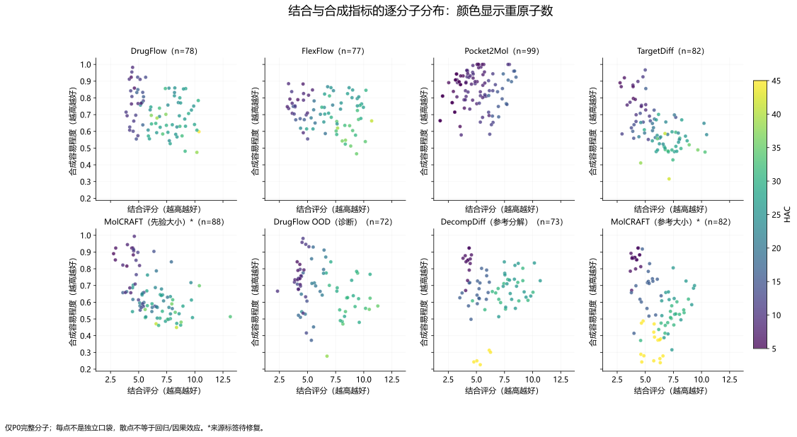
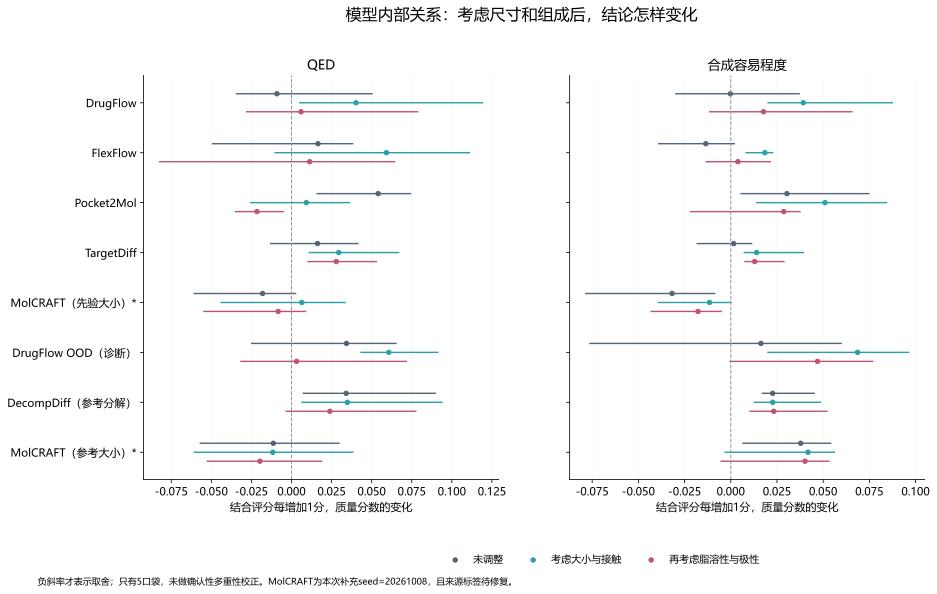
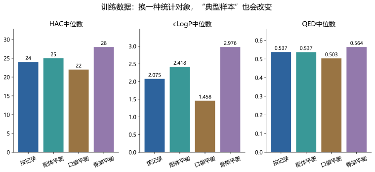
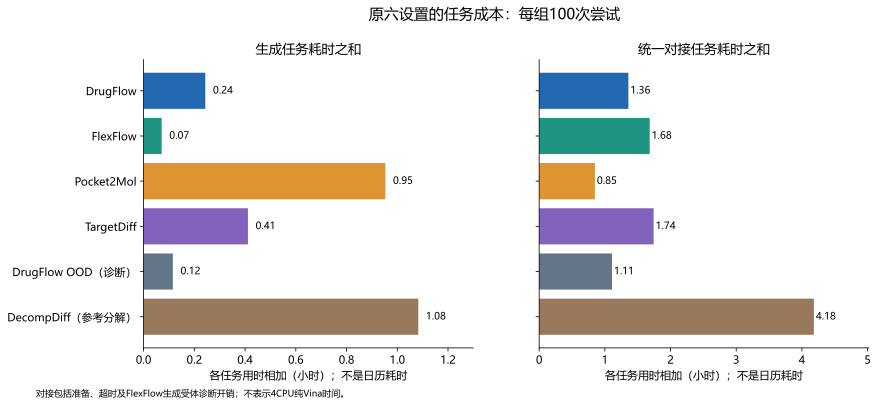
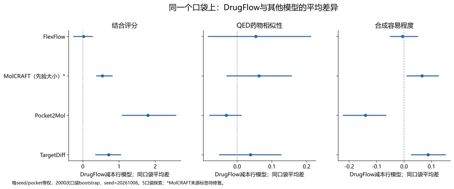

网页版保留汇报、方法解释、结果表和图表。代码、日志及完整数据原件由汇报者离线保存；引用索引保留文件名与行号。
附件10：用图说明重点，怎样避免读错
六幅新增图
每幅先讲要说明什么，再给图和注意事项。需要数值时转到比较方法或完整结果表。图不替代统计，也不证明设计造成了因果影响。
图1 · 同样100次尝试，交付完整结果的数量不同
先看成功数量，再看成功分子的平均性质。灰色部分仍是预算的一部分，不能从评价中悄悄删掉。

这张图用于说明交付率，不能单独比较分子性质。每个设置5口袋、2种子、100次尝试；MolCRAFT两组来源标签待修正。

图2 · 结合与合成的关系，要连同分子大小看
每个点是一个成功分子。横轴向右表示结合评分较高，纵轴向上表示估计更容易合成；颜色区分重原子数。

图里混有不同口袋，不能只看总体散点方向宣布模型内部规律。应继续看按口袋分析和调整后的结果。

图3 · 考虑尺寸和组成之后，关系方向可能改变
点是模型内部的变化率，线是95%不确定性区间。负值表示结合评分增加时质量分数下降；三种颜色表示考虑了不同因素。

只有5个口袋。区间不等于假设概率，部分信号仍需更大试验验证；MolCRAFT为离线补充且来源标签待修正。

图4 · 换一种统计对象，典型分子也会改变
同一批数据按记录、配体、口袋、骨架四种方式统计。HAC中位数的变化说明重复出现的实体会影响直观印象。

这不是四份独立数据，也不是让模型分别生成的四组结果。

图5 · 模型生成快，不代表整个评价流程也便宜
左边是生成任务总时间，右边是对接任务总时间；两步分开规划。对接还包括准备、超时和部分诊断工作。

各任务时长之和不是日历完工时间，图中每个设置都是100次尝试，扩大预算前还需检查长时间任务。

图6 · 同一个口袋上，再比较模型平均差异
每行是DrugFlow减去该行模型。点在0右边表示DrugFlow该指标更高；在左边表示更低。结合与合成两列方向不同才提示这对平均目标的取舍。

这是5口袋探索，先按种子和口袋平均，再估计区间；不把所有分子当独立口袋。MolCRAFT身份标签还需修正。

原训练数据图，按要回答的问题查看
原图保留原样，已有分布与关系不会因为改写语言而重新计算。


累计分布图的纵轴表示“有多少比例的记录不超过横轴的值”，可以用来看两组分布是否整体偏移；它不是预测成功率。
还缺的数据和图
完整20/100口袋配对图、失败交付与条件性质并排图、大小匹配图、改变同一设置的配对效果图、原始与对接后接触图、同晶体恢复和错配选择性图仍需后续工作。现有临时前沿数值可查，但正式参考位置未固定，不能做成已经完成的正式排名图。下一步图表计划